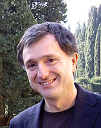

<main class="uk-section uk-section-default">

    <div class="uk-container">
        <h1>Program</h1>
        <p>#ArgMining 2019 is a full-day workshop, tentatively including oral, poster, and demo presentations, and more. We
            are delighted to announce Giovanni Sartor as a keynote speaker. More details on the program to be announced
            later.</p>
    
        <h2>Invited Speaker: <a href="https://giovannisartor.net" target="blank">Giovanni Sartor</a></h2>
        <div class="uk-section-xsmall" uk-grid>
            <div class="uk-width-small uk-padding-remove-top">
                
            </div>
            <div class="uk-width-4-5">
                <p>#
                    Giovanni Sartor is part-time professor in legal informatics at the University of Bologna and part-time
                    professor in Legal informatics and Legal Theory at the European University Institute of Florence. He
                    obtained a PhD at the European University Institute (Florence), worked at the Court of Justice of the
                    European Union (Luxembourg), was a researcher at the Italian National Council of Research (ITTIG,
                    Florence), held the chair in Jurisprudence at Queen’s University of Belfast, and was Marie-Curie
                    professor at the European University of Florence. He has been President of the International Association
                    for Artificial Intelligence and Law. He has published widely in legal philosophy, computational logic,
                    legislation technique, and computer law. He is co-director of the Artificial intelligence and law
                    Journal and co-editor of the Ratio Juris Journal. His research interests include legal theory, logic,
                    argumentation theory, modal and deontic logics, logic programming, multiagent systems, computer and
                    Internet law, data protection, e-commerce, law and technology, aviation law, human rights. Among others,
                    he is author of the books "Artificial Intelligence in Law" (Tano, 1993) and "Legal Reasoning: A
                    Cognitive Approach to the Law" (Springer, 2005), as well as co-editor of the "Handbook of Legal
                    Reasoning and Argumentation" (Springer, 2018).
    
                </p>
            </div>
        </div>
        <h2>Best Paper Award sponsored by <a href="https://www.ibm.com" target="_blank">IBM</a></h2>
        <div class="uk-section-xsmall" uk-grid>
            <div class="uk-width-small uk-padding-remove-top">
                
            </div>
            <div class="uk-width-4-5">
                <p>#
                    An award will be given to the best paper, published in the workshop. The award comes with a gift of US-$
                    500, sponsored by IBM, the company behind <a
                        href="https://www.research.ibm.com/artificial-intelligence/project-debater/" target="_blank">Project
                        Debater</a>. Thanks to IBM for this great support! The winner of the best paper award will be
                    decided by an independent committee.
    
                </p>
            </div>
        </div>
        <h2 id="accepted_papers">Accepted Papers</h2>
        
        <h3>Oral Presentations</h3>

        <p>#35 (long)  <br />
        Transferring knowledge from discourse to arguments: A case study with scientific abstracts <br />
        Pablo Accuosto and Horacio Saggion 
        </p>

        <p>#37 (long)<br />
        Persuasion of the Undecided: Language vs. the Listener<br />
        Liane Longpre, Esin Durmus and Claire Cardie
        </p>

        <p>#38 (long) <br />
        A Cascade Model for Proposition Extraction in Argumentation <br />
        Yohan Jo, Jacky Visser, Chris Reed and Eduard Hovy
        </p>
        
        <p>#39 (long) <br />
        Towards Assessing Argumentation Annotation - A First Step <br />
        Anna Lindahl, Lars Borin and Jacobo Rouces
        </p>
        
        <p>#41 (long) <br />
        Segmentation of Argumentative Texts with Contextualised Word Representations <br />
        Georgios Petasis 
        </p>
        
        <p>#42 (short)
        Aligning Discourse and Argumentation Structures using Subtrees and Redescription Mining <br />
        Laurine Huber, Yannick Toussaint, Charlotte Roze, Mathilde Dargnat and Chloé Braud 
        </p>
        
        <p>#52 (long) <br />
        Dissecting Content and Context in Argumentative Relation Analysis <br />
        Juri Opitz and Anette Frank
        </p>
        
        <h3>Posters</h3>
    
        <p>#12 (long)<br />
            Evaluation of Scientific Elements for Text Similarity in Biomedical Publications<br />
            Mariana Neves, Daniel Butzke and Barbara Grune</p>
            
            <p>#13 (short)<br />
            Listening for Claims: Listening Comprehension using Corpus-Wide Claim Mining<br />
            Tamar Lavee, Matan Orbach, Lili Kotlerman, Yoav Kantor, Shai Gretz, Lena Dankin, Michal Jacovi, Yonatan Bilu, Ranit Aharonov and Noam Slonim</p>
            
            <p>#18 (demo)<br />
            The Swedish Poligraph: A Semantic Graph for Argument Mining of Swedish Parliamentary Data<br />
            Stian Rødven Eide</p>
            
            <p>#21 (short)<br />
            The utility of discourse parsing Features for Predicting Argumentation Structure<br />
            Freya Hewett, Roshan Prakash Rane, Nina Harlacher and Manfred Stede</p>
            
            <p>#27 (long)<br />
            Is It Worth the Attention? A Comparative Evaluation of Attention Layers for Argument Unit Segmentation<br />
            Maximilian Spliethöver, Jonas Klaff and Hendrik Heuer</p>
            
            <p>#29 (short)<br />
            Argumentative Evidences Classification and Argument Scheme Detection Using Tree Kernels<br />
            Davide Liga</p>
            
            <p>#32 (long)<br />
            Argument Component Classification by Relation Identification by Neural Network and TextRank<br />
            Mamoru Deguchi and Kazunori Yamaguchi</p>
            
            <p>#33 (long)<br />
            Ranking Passages for Argument Convincingness<br />
            Peter Potash, Adam Ferguson and T. J. Hazen</p>
            
            <p>#36 (long)<br />
            How Does Python Compare to MATLAB with respect to Performance? Categorization of Comparative Sentences in the Wild<br />
            Alexander Panchenko, Alexander Bondarenko, Mirco Franzek, Matthias Hagen and Chris Biemann</p>
            
            <p>#40 (long)<br />
            Detecting Argumentative Discourse Acts with Linguistic Alignment<br />
            Timothy Niven and Hung-Yu Kao</p>
            
            <p>#43 (long)<br />
            Annotation of Rhetorical Moves in Biochemistry Articles<br />
            Mohammed Alliheedi, Robert E. Mercer and Robin Cohen</p>
            
            <p>#48 (short)<br />
            Lexicon Guided Attention Neural Network Model for Argument Mining<br />
            Jian-Fu Lin, Kuo Yu Huang, Hen-Hsen Huang and Hsin-Hsi Chen</p>
            
            <p>#50 (long)<br />
            Gradual Argumentation Evaluation for Stance Aggregation in Automated Fake News Detection<br />
            Neema Kotonya and Francesca Toni</p>
            
    </div>
</main>